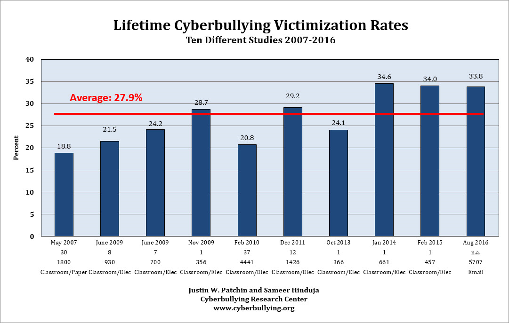

Cyberbullying is bullying that takes place over digital devices like cell phones, computers, and tablets. Cyberbullying can occur through SMS, Text, and apps, or online in social media, forums, or gaming where people can view, participate in, or share content. Cyberbullying includes sending, posting, or sharing negative, harmful, false, or mean content about someone else. It can include sharing personal or private information about someone else causing embarrassment or humiliation. Some cyberbullying crosses the line into unlawful or criminal behavior. The most common places where cyberbullying occurs are: Social Media, such as Facebook, Instagram, Snapchat, and Twitter ,SMS (Short Message Service) also known as Text Message sent through devices ,Instant Message (via devices, email provider services, apps, and social media messaging features) and Email.
 At the Cyberbullying Research Center we have been collecting data from middle and high school students since 2002. We have surveyed more than 20,000 students from middle and high schools from across the United States in twelve unique projects. The following two charts show the percent of respondents who have experienced cyberbullying at some point. 2007 Pew Research study found 32 percent of teens have been victims of some type of cyberbullying. Nearly a decade later, a 2016 study by the Cyberbullying Research Center found those numbers were almost unchanged. By 2016, just under 34 percent of teens reported they were victims of cyberbullying.Meanwhile, the National Crime Prevention Council puts that number much higher, at 43 percent. According to the Cyberbullying Research Center, which has been collecting data on the subject since 2002, that number has doubled since 2007, up from just 18 percent. Disagreements in statistics and data gathering methods aside, a minimal increase in cyberbullying is a distinct positive. It’s also an indication that the increasing attention on cyberbullying in the intervening years has done little to stem the tide.
© to CyberSafe 2019“Technology trust is a good thing, but control is a better one”